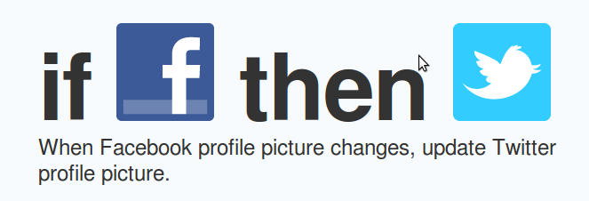

Cambiar foto de perfil en Twitter, cuando la cambio en Facebook
Ifttt, If this then that, es un sitio web que permite utilizar está clásica sentencia de control de programación en la web.
Uno tiene a su disposición una serie de canales. Estos disparan eventos y realizan acciones. La combinación de un evento y una acción es una tarea. Y cuando uno publica una tarea, se la llama receta. Existe un repositorio de recetas publicadas por los usuarios en donde se pueden encontrar algunas muy útiles. La mejor que estoy usando es:
Otras recetas que estoy usando son:
- Cuando posteo en el blog, comunicarlo en Facebook.
- xkcd comic emailed to me whenever it updates
- Tweet if I upload a video to youtube.
Comentarios
Comments powered by Disqus